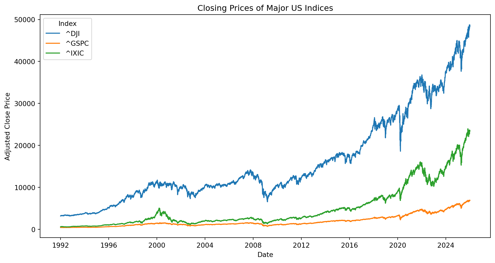
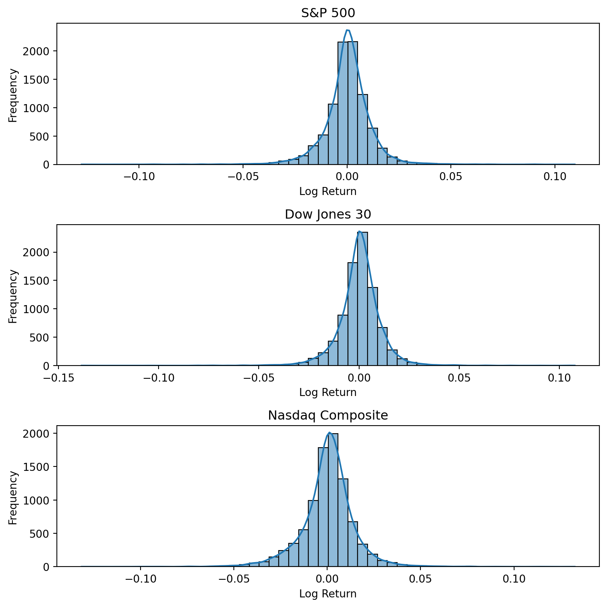

Libraries needed for this exercise: yfinance, matplotlib, numpy, seaborn.
yfinance is a Python library that allows you to download historical market data from Yahoo Finance. It is widely used for fetching stock prices (open, close, high, low), dividends, splits, and other financial data.
Objective
This project aims to understand leading indicators of the U.S. stock market by analyzing the S&P 500, Dow Jones, and NASDAQ indices. We will explore historical data, visualize trends, and identify patterns that helps investors make well-informed decisions.
Leading Indicators
S&P 500
The S&P 500 (Standard & Poor’s 500) is a stock market index that measures the performance of 500 large companies listed on U.S. stock exchanges. It is one of the most commonly followed equity indices and is often considered a benchmark for the overall health of the US stock market.
Dow Jones
The Dow Jones Industrial Average (DJIA) is a stock market index that measures the stock performance of 30 large, publicly owned companies based in the U.S. It is one of the oldest and most widely recognized stock market indices in the world.
NASDAQ
The NASDAQ Composite is a stock market index that includes almost all stocks listed on the NASDAQ stock exchange. It is heavily weighted towards technology companies and is often used as a benchmark for the performance of the tech sector.
Overall time Series Trends
Line graph below shows the overall upward trends of the S&P 500, Dow Jones, and NASDAQ indices over the past 30 years. The Dow Jones exhibits the highest growth, followed by NASDAQ comes second and then S&P 500. The Dow Jones and NASDAQ display greater volatility compared to the S&P 500, which follows a steadier growth trajectory.
Code
import yfinance as yfimport numpy as npimport matplotlib.pyplot as pltimport seaborn as snsstartdate ="1990-01-01"enddate ="2025-12-31"tickers = ["^GSPC", "^DJI", "^IXIC"]# auto_adjust=True to get adjusted close prices (accounting for dividends and stock splits)df = yf.download( tickers, start=startdate, end=enddate, auto_adjust=True)["Close"]sp500, dw30, nasdaq = df["^GSPC"], df["^DJI"], df["^IXIC"]# today/yesterday price ratio / gross returndef returns(prices):return np.log(prices/prices.shift(1)).dropna()sp500ret, dw30ret, nasdaqret = returns(sp500), returns(dw30), returns(nasdaq)data = df.dropna().reset_index().melt( id_vars="Date", var_name="Index", value_name="Close")plt.figure(figsize=(8, 6))sns.lineplot(data=data, x="Date", y="Close", hue="Index")plt.title("Closing Prices of Major US Indices")plt.xlabel("Date")plt.ylabel("Adjusted Close Price")plt.show()

Histogram Analysis
Raw Closing Prices
Visualizing the closing prices using histograms, we see right skewed distributions, indicating that there are more days with lower closing prices and fewer days with very high closing prices. One reason for the sparse distribution is that closing prices have increased continuously over the years, resulting in a wide range of data points.
With log transformation, we observe more normalized distributions. Log returns convert multiplicative processes into additive ones, making the data easier to analyze statistically.
Histograms show more symmetric distributions of the logarithm returns of all 3 of the indices over the last 30 years, providing insight into their performance and volatility. The majority of returns clustering around the mean indicates smaller price movements. The probability of extreme returns (both positive and negative) is low, suggesting a limited risk of significant gains or losses during this period. Overall, the histograms suggest that all 3 indices has relatively stable performance with moderate volatility over the year, making them suitable for long-term investment strategies.
Code
fig, axes = plt.subplots(3, 1, figsize=(8, 8))series_list = [sp500ret, dw30ret, nasdaqret]for series, name, i inzip(series_list, ["S&P 500", "Dow Jones 30", "Nasdaq Composite"], range(3)): sns.histplot(series, kde=True, bins=50, ax=axes[i]) axes[i].set_title(name)for ax in axes: ax.set_xlabel("Log Return") ax.set_ylabel("Frequency")print(name, "'s Total Return Over Past 30 Years: ",(np.exp(series.sum())-1).round(4))print(name, "'s Annual Volatility: ", (series.std()*np.sqrt(252)).round(4)) plt.tight_layout()plt.show()
S&P 500 's Total Return Over Past 30 Years: 18.2664
S&P 500 's Annual Volatility: 0.1808
Dow Jones 30 's Total Return Over Past 30 Years: 14.3546
Dow Jones 30 's Annual Volatility: 0.1743
Nasdaq Composite 's Total Return Over Past 30 Years: 50.3675
Nasdaq Composite 's Annual Volatility: 0.2313

Total Returns and Annual Volatility
The total returns of 3 indices show significant growth. NASDAQ has the highest return and volatility, 50.27/ 23%, i.e. $1 invested in NASDAQ would have grown to $50.27 over the past 30 years, with annual fluctuations of 23%. In contrast, the Dow Jones has the lowest returns and volatility, while S&P 500 showing a more stable performance compared to NASDAQ.
Statistical Measures of Log Returns
The distributions of the log returns of all 3 indices has a symmetric distribution, but we can also use statistical measures to confirm whether they follow a normal distribution. Let’s find mean, median, skewness, kurtosis of log return for each index.
Code
for series, name inzip(series_list, ["S&P 500", "Dow Jones 30", "Nasdaq Composite"]):print(name, "'s mean, median, mode: ",series.mean().round(4), "/",series.median().round(4),"/", series.mode().round(4))print(name, "'s skewness, kurtosis: ", series.skew().round(4),"/", series.kurt().round(4))
The means, medians, and mode of the indices are extremely close to each other, indicating that the distributions are indeed symmetric and centered around the same value. Skewness explains whether a distribution is left or right leaning; in this case, a minimal left leaning is observed. Kurtosis measures the “tailedness” of the distributions. The high kurtosis values indicates extreme price movements happen frequently.
Conclusion
All 3 indices show relatively stable performance with moderate volatility over time. The S&P 500 and Dow Jones indices demonstrate more stable performance compared to NASDAQ. NASDAQ has the highest return and volatility, making it suitable for investors who can tolerate higher risk in exchange for potentially higher rewards.
The distributions of log returns for all 3 indices are symmetric, but the high kurtosis values indicate frequent extreme movements. A friendly advice for investors is to consider long-term investment strategies and be prepared for periods of market volatility. High returns come from surviving drawdowns rather than timing the market.